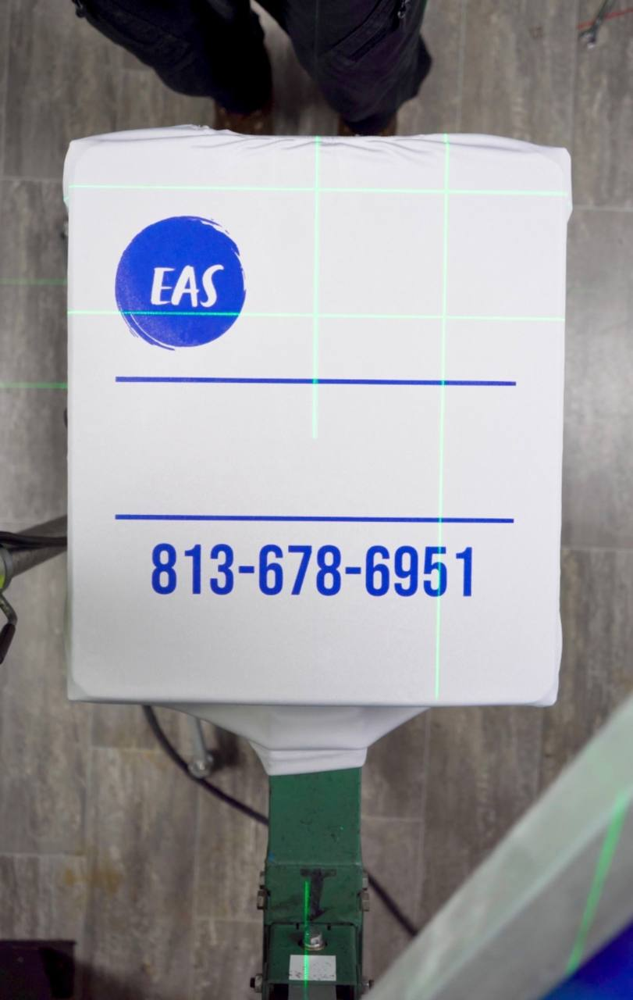
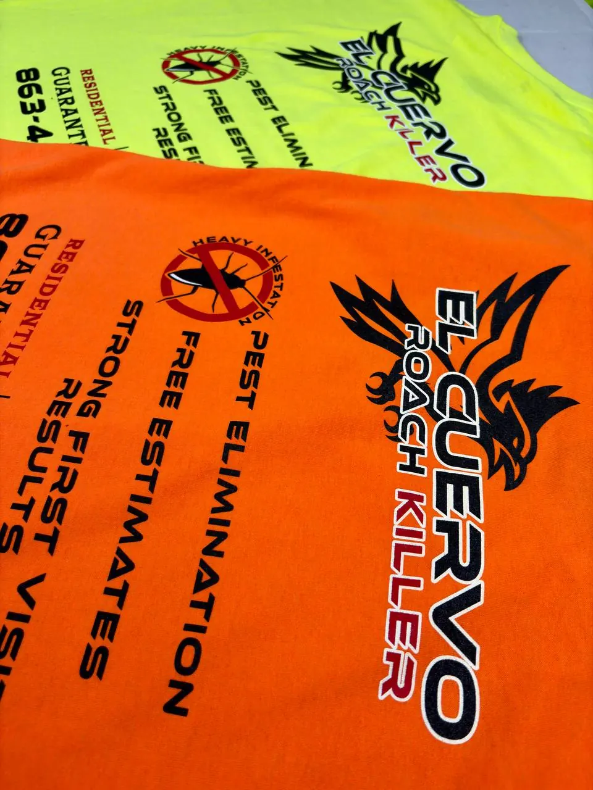
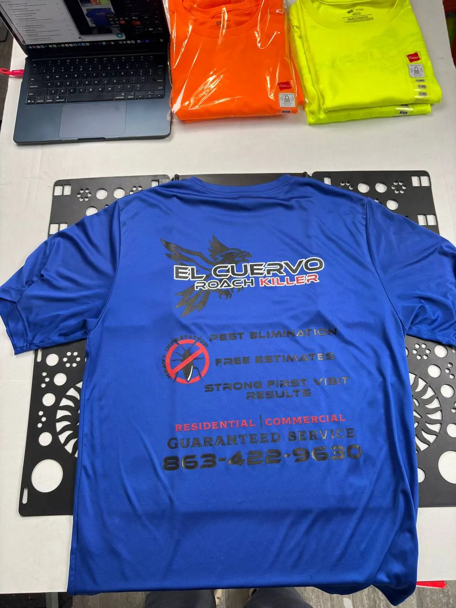
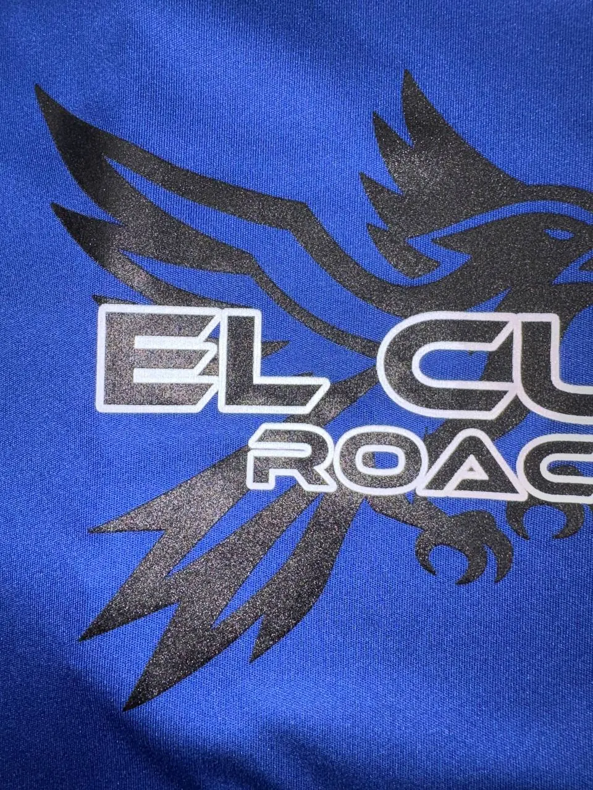

Inside the print shop
Real ink.
Layer by layer.
Follow a real production run from first pull to finished shirt. Every color gets its own screen, its own pass, and a careful eye.
See the process
Printedin Florida Embark / 04-color production run
Plastisol ink sits bright and opaque on the garment. A smooth underbase keeps every color vivid.
Each plastisol color is pulled through its own screen for rich coverage and crisp registration.
Heat transforms wet plastisol into a durable finish, locking sharp detail in for repeat wear.
Once cured at the right temperature, plastisol delivers a bold print made to survive the wash.
Why it lasts
Screen printed. Not heat pressed.
Real ink
Plastisol through mesh into the garment — not a transfer sitting on top.
Sharp detail
Clean edges, solid coverage, and registration that looks intentional.
Built to wash
Prints that survive workdays and laundry without cracking or peeling.

Controlled heat cures the ink without scorching the fabric, leaving polished uniforms ready for the crew.

High-opacity plastisol makes every detail pop on safety colors—bold branding built for the job.

A precise dryer cure fuses every color into a flexible full-back print ready for repeat wear.

Controlled heat turns plastisol into a smooth, durable finish with sharp edges customers notice.
Ready to print
Have a project in mind?
Send a few details. We'll follow up with pricing, timing, and next steps.